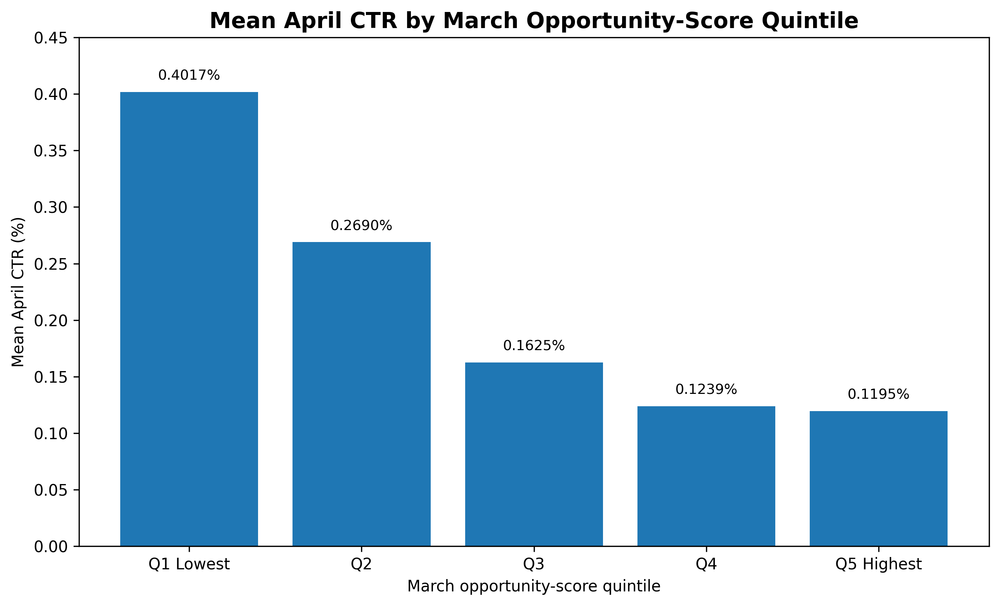

Abstract
This project asks whether observed search and content-performance signals can be used to rank pages for refresh or review. A repeatable opportunity score was created from two components: CTR opportunity relative to position-band benchmarks and ranking opportunity based on observed average position. The score was built using March 2026 data for pages with at least 50 impressions, then evaluated against observed April 2026 performance using a time-aware validation design. The combined score showed a moderate negative association with April CTR (Spearman ρ = −0.468, p < 0.001), while a simple CTR-only baseline showed a stronger association (ρ = −0.512, p < 0.001). The result supports directional prioritization for review, but it does not prove that refreshing a page would cause its performance to improve.
1. Problem framing
Content teams need a practical way to decide which pages deserve review first. A page may have weak click-through performance for its observed search position, or it may appear at a relatively weak average position. These signals can be useful for prioritization, but they are not direct proof that a page is outdated or that a refresh will improve performance.
Can observed search and content-performance signals be used to rank pages for refresh or review?
Decision supported
The output is a ranked list of content opportunities. Each recommendation includes a score, a reason code, and a suggested review action.
Intended interpretation
The score is a decision-support signal. It identifies pages associated with weaker subsequent observed performance; it does not establish causation, diagnose the exact reason for poor performance, or guarantee that a refresh will improve results.
2. Data and public-safety constraints
The analysis uses the FlyRank internship warehouse with a March 2026 feature
window and an April 2026 validation window. The analysis operates at the
content_hash_id level and does not publish client names, domains,
URLs, private queries, credentials, or raw private exports.
| Item | Value |
|---|---|
| Feature window | March 2026 |
| Validation window | April 2026 |
| March content items | 331,437 |
| Eligibility rule | At least 50 March impressions |
| Eligible March content items | 116,114 |
| Eligible items matched to April | 116,114 |
| April position available | 114,993 |
| April position missing | 1,121 |
Primary signals
- March impressions and clicks
- March CTR
- March average search position
- Position-band CTR benchmarks
- April CTR for validation
- April average position for a secondary validation view
Data limitations
- Some content items have limited or missing engagement fields.
- Search and analytics coverage is not uniform across all rows.
- Observed associations do not establish causal effects.
- Position and CTR are influenced by multiple factors not represented in the score.
3. Baseline
The baseline ranks pages only by March CTR, with lower CTR receiving higher review priority. This is intentionally simple and provides a direct comparison for the combined opportunity score.
The baseline is important because a more complicated score should not be assumed to be better merely because it uses more signals.
4. Methodology
4.1 Eligibility
Pages were included when their aggregated March impression count was at least 50. This reduces the influence of pages with extremely little search exposure.
4.2 CTR opportunity
Pages were assigned to observed-position bands: 1–3, 4–5, 6–10, 11–20, 21–50, and 51–100. For each band, the median March CTR was used as a descriptive benchmark.
4.3 Ranking opportunity
Ranking opportunity was represented by average position, clipped to the range from 0 to 50. Higher position numbers indicate weaker observed ranking.
4.4 Normalization and combined score
CTR gap and ranking opportunity were converted to percentile ranks so that the two components could be combined on comparable scales.
4.5 Time-aware validation
Build the score in March
Only March features were used to calculate the opportunity score.
Freeze the ranking
The March score was retained without using April outcomes.
Join April observations
April CTR and average position were used only as future validation fields.
Compare with the baseline
Both methods were evaluated against the same April validation population.
4.6 Leakage check
April validation fields were not included among the March score inputs. April data was used only after the March score had been calculated.
5. Evaluation and results
5.1 Score-quintile validation
Pages were grouped into five groups according to their March opportunity scores. The lowest-score group had a mean April CTR of 0.4017%, while the highest-score group had a mean April CTR of 0.1195%.

5.2 Spearman association with April CTR
| Method | Spearman ρ with April CTR | Interpretation |
|---|---|---|
| CTR-only baseline | −0.512 | Higher baseline priority was associated with lower April CTR. |
| Combined opportunity score | −0.468 | Higher combined scores were associated with lower April CTR. |
Both associations were statistically significant at p < 0.001. The CTR-only baseline had the stronger association with April CTR in this validation.
5.3 Association with April average position
| Method | Spearman ρ with April position |
|---|---|
| CTR-only baseline | +0.324 |
| Combined opportunity score | +0.544 |
The positive association indicates that higher scores tended to correspond to larger April position values, which represent weaker observed rankings. The combined score had a stronger association with April position than the baseline.
6. Interpretation and limitations
The results provide directional evidence that the March opportunity score can help prioritize pages associated with weaker subsequent search performance. However, the combined score did not outperform the simple CTR-only baseline when April CTR was used as the validation outcome.
What the score can support
- Creating a review queue.
- Prioritizing pages for manual inspection.
- Flagging pages with low CTR relative to their position band.
- Identifying pages with relatively weak observed ranking.
What the score cannot establish
- That a page is definitely outdated.
- That a title or snippet is the only reason for low CTR.
- That refreshing a page will cause CTR or ranking to improve.
- That the score proves anything about Google's ranking algorithm.
7. Ranked recommendations and action playbook
The scoring method produces a ranked list of content opportunities. Each row should include the content hash, opportunity score, CTR, average position, position band, CTR gap, reason code, and recommended action.
| Reason code | Meaning | Recommended action |
|---|---|---|
LOW_CTR_AND_WEAK_POSITION |
CTR gap is present and observed position is at least 10. | Refresh / improve CTR; inspect title, snippet, intent, and content depth. |
LOW_CTR |
CTR is below the position-band benchmark. | Review title, snippet, search intent, and SERP alignment. |
WEAK_POSITION |
Observed position is relatively weak. | Review content depth, topical coverage, internal linking, and relevance. |
Suggested review workflow
- Start with the highest-scoring pages.
- Inspect the page's search intent and content coverage.
- Review title and snippet alignment with the query intent.
- Check internal links, topical depth, and content freshness.
- Record the proposed action before making changes.
- Evaluate any future changes using a separate, controlled analysis where possible.
8. Reproducibility
The project repository contains the capstone report, supporting assets, and analysis outputs. The implementation uses DuckDB to query the FlyRank warehouse and Python for feature engineering, validation, and reporting.
Project resources
Reproduction outline
- Authenticate to the Hugging Face dataset.
- Load March 2026 content-level aggregates.
- Apply the minimum-impression eligibility rule.
- Calculate CTR benchmarks and opportunity features.
- Calculate the combined opportunity score.
- Aggregate April 2026 validation fields.
- Join March scores to April observations.
- Compare the combined score with the CTR-only baseline.
- Export ranked recommendations and validation charts.
9. Acknowledgments and data credit
This work was completed as part of the FlyRank ML Internship 2026 curriculum.
Built on the FlyRank ML Internship dataset
Public-safe reporting excludes client names, domains, URLs, private queries, credentials, and raw private exports.